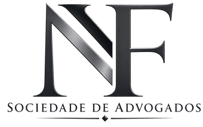

Dados brutos
Bases de sinistros, elegibilidade e utilização como de fato chegam: incompletas, inconsistentes, sem padrão comum.
Consultoria atuarial e inteligência de dados para decisões que sustentam o futuro da saúde suplementar.
Seis estágios entre o dado que chega e a decisão que sai. A Algtrix é contratada, quase sempre, porque algum deles foi pulado.
Bases de sinistros, elegibilidade e utilização como de fato chegam: incompletas, inconsistentes, sem padrão comum.
Tratamento, deduplicação e conciliação. Sem base confiável, todo modelo adiante é opinião com aparência de número.
Regressão, séries temporais e distribuições ajustadas ao comportamento real da carteira — não a uma média de mercado.
O modelo passa a medir: frequência, severidade e cauda. Risco mensurado é risco administrável.
Indicadores conectados entre si, que explicam por que o número se move — e não apenas quanto.
Precificação, provisionamento e estratégia. É no ponto de decisão que o trabalho atuarial passa a valer alguma coisa.
Uma leitura contínua da carteira: sinistralidade observada, faixa de projeção e os indicadores que sustentam cada decisão técnica.
Visualização conceitual · série ilustrativa, não representa carteira de cliente
Média dos doze meses observados na série.
Extrapolação da tendência, com faixa de confiança de ±2,4 p.p.
Diferença entre o primeiro e o último mês da série.
Cada frente resolve uma pergunta diferente da operação. Selecione uma para ver o que ela mede.
Da sinistralidade à rede credenciada, cruzamos indicadores operacionais e regulatórios para apoiar decisões mais seguras diante das exigências da ANS.
Da precificação às reservas técnicas, os modelos combinam sinistralidade histórica, tendências de utilização e cenários de estresse para dimensionar o risco com rigor técnico.
Da nota técnica ao parecer atuarial, a consultoria acompanha o ciclo completo de precificação, provisionamento e solvência exigido pela regulação do setor.
Da segmentação por perfil de beneficiário à leitura de sinistro incorrido, a avaliação de carteira revela padrões de utilização essenciais para decisões de renovação e precificação.
Regressão, séries temporais e distribuições de perda ajustadas ao comportamento observado — o modelo descreve a carteira que existe, não a que seria conveniente.
Qualidade de dado, indicadores-chave e painéis que sustentam a rotina de gestão: a informação chega pronta para ser usada, não para ser interpretada de novo.
A mesma carteira se comporta de formas diferentes conforme o cenário. Alterne entre eles e observe a distribuição se reorganizar.
Modelo conceitual de carteira. Os três cenários usam a mesma distribuição de base, alterando apenas a cauda — que é, na prática, onde o resultado de uma operadora se decide.
O histórico explica o que aconteceu. O modelo atuarial é o que permite agir antes.
Sinistros, utilização e comportamento observado. É o único material verificável que existe.
Onde o histórico deixa de ser registro e passa a ser estrutura: frequência, severidade, tendência.
Projeções com faixa de incerteza declarada. Decidir sabendo a margem de erro é diferente de adivinhar.
Nosso trabalho começa onde os dados terminam: na decisão.
Ser referência em assessoria atuarial do Brasil, reconhecida por sua expertise em saúde suplementar, capacidade de gerar resultados para seus clientes e contribuição para a evolução do setor.
A empresa estará na vanguarda das inovações e tendências do mercado, oferecendo soluções que garantam a sustentabilidade das operadoras e o acesso à saúde de qualidade para a população.
Método auditável do dado de origem ao parecer assinado. Toda conclusão sustenta a pergunta seguinte.
Camadas que se explicam entre si: o indicador vem acompanhado da razão pela qual ele se moveu.
O horizonte importa mais do que o retrovisor. Cenários projetados, não apenas históricos descritos.
Decisão que se sustenta no tempo. Estabilizar a operação vale mais que otimizar um único trimestre.
Flórida Consultoria

NF Sociedade de Advogados
Estamos aqui para transformar essa informação em decisão.
Transformamos dados em resultados
Três perguntas rápidas. Respondemos com a leitura técnica inicial do seu caso.